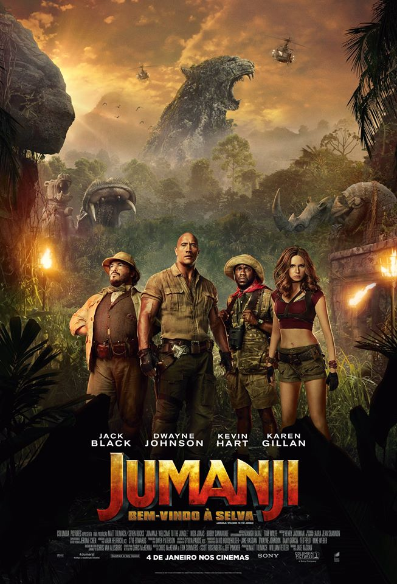

Filmes Famosos de The Rock

"Jumanji: Bem-Vindo à Selva" (2017)
Neste sucesso de bilheteria, The Rock interpreta o avatar de um jogo virtual, mostrando seu lado cômico e heróico. O filme foi um grande sucesso mundial e rendeu continuações.
Ver mais